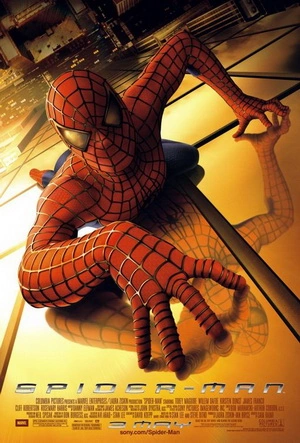
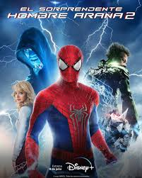
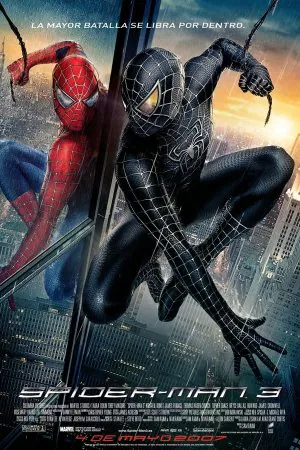
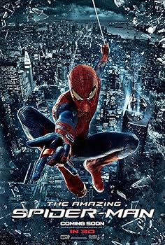

Peliculas
-
Spider-Man No Way Home

Peter Parker pide ayuda al Doctor Strange para borrar su identidad secreta de la memoria de todos. El hechizo sale mal y abre el multiverso, trayendo villanos de otras dimensiones. Peter debe enfrentarse a estos enemigos y aprende a aceptar su responsabilidad como Spider-Man.
-
Spiderman 1
Peter Parker obtiene superpoderes tras ser mordido por una araña genéticamente alterada. Mientras aprende a usar sus habilidades, se enfrenta al Duende Verde, que amenaza Nueva York. Peter también navega sus sentimientos por Mary Jane Watson y elige ser un héroe.
-
The amazing Spiderman 2
Peter Parker debe salvar la ciudad de Electro, un ex-empleado de Oscorp convertido en un ser de energía. Mientras tanto, desentraña los misterios sobre la muerte de sus padres y su conexión con Oscorp. La película culmina con la trágica muerte de Gwen Stacy.
-
Spiderman 3
Peter Parker enfrenta nuevos desafíos con el simbionte alienígena que amplifica su agresividad. Además, lucha contra el Hombre de Arena y su amigo Harry Osborn, quien busca venganza como el Nuevo Duende. Peter aprende a perdonar y deja atrás el simbionte, salvando la ciudad.
-
Spiderman Homecoming

Peter Parker, bajo la mentoría de Tony Stark, intenta equilibrar su vida de estudiante y superhéroe. Se enfrenta al Buitre, un villano que trafica armas avanzadas hechas de tecnología alienígena. Peter aprende el valor de ser un héroe sin necesidad de un traje avanzado.
-
The amazing Spiderman
Peter Parker descubre un maletín que pertenecía a su padre, llevando a la verdad sobre sus padres desaparecidos. Mientras tanto, enfrenta al Lagarto, una criatura creada por el Dr. Curt Connors. Peter también desarrolla una relación con Gwen Stacy, su compañera de clase. -
Spiderman Homecoming
Peter Parker, bajo la mentoría de Tony Stark, intenta equilibrar su vida de estudiante y superhéroe. Se enfrenta al Buitre, un villano que trafica armas avanzadas hechas de tecnología alienígena. Peter aprende el valor de ser un héroe sin necesidad de un traje avanzado.
-
The amazing Spiderman
Peter Parker descubre un maletín que pertenecía a su padre, llevando a la verdad sobre sus padres desaparecidos. Mientras tanto, enfrenta al Lagarto, una criatura creada por el Dr. Curt Connors. Peter también desarrolla una relación con Gwen Stacy, su compañera de clase.